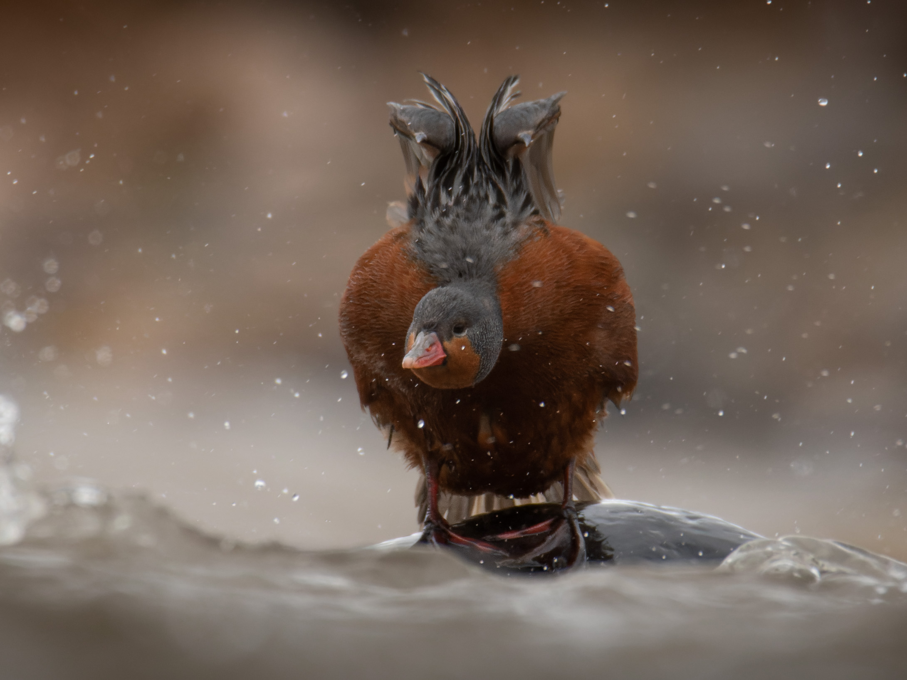
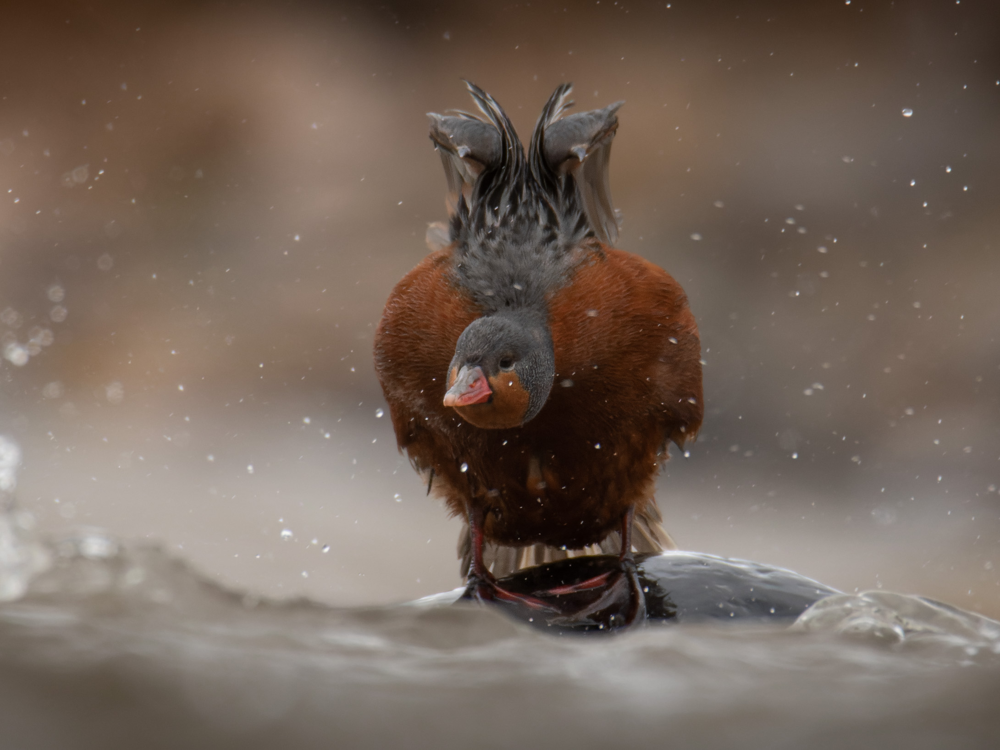
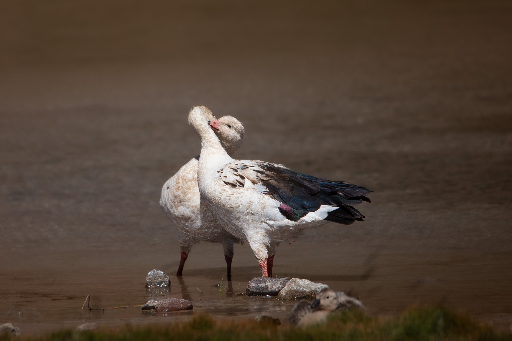
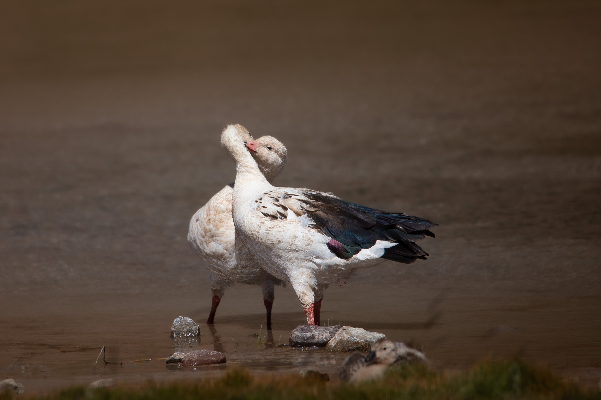

Cuyo
Birding.
Sobre mí

Mi nombre es Martin soy un apasionado por la naturaleza, un aficionado de la fotografía y un guarda parque de la reserva natural Villavicencio en Mendoza, Argentina. A lo largo de los años, visite muchos parques nacionales, reservas naturales y áreas protegidas en todo el país, y he tenido la oportunidad de fotografiar una gran variedad de aves, plantas y animales en su hábitat natural. Siempre visito los senderos y caminos de estos lugares con mi cámara en mano, y he pasado horas observando y esperando pacientemente para capturar la imagen perfecta. A través de mis fotografías, logro capturar la belleza y la diversidad de la naturaleza, y he compartido sus imágenes con otros amantes de la naturaleza a través de exposiciones, galerías y redes sociales. Mis fotos han sido reconocidas y premiadas en varios concursos de fotografía, y han aparecido en revistas y publicaciones especializadas en naturaleza. Para mí, tomar fotos de la naturaleza es una forma de conectar con la vida silvestre, de explorar y conocer nuevos lugares y de compartir mi pasión con otros.
Galeria
 



 
